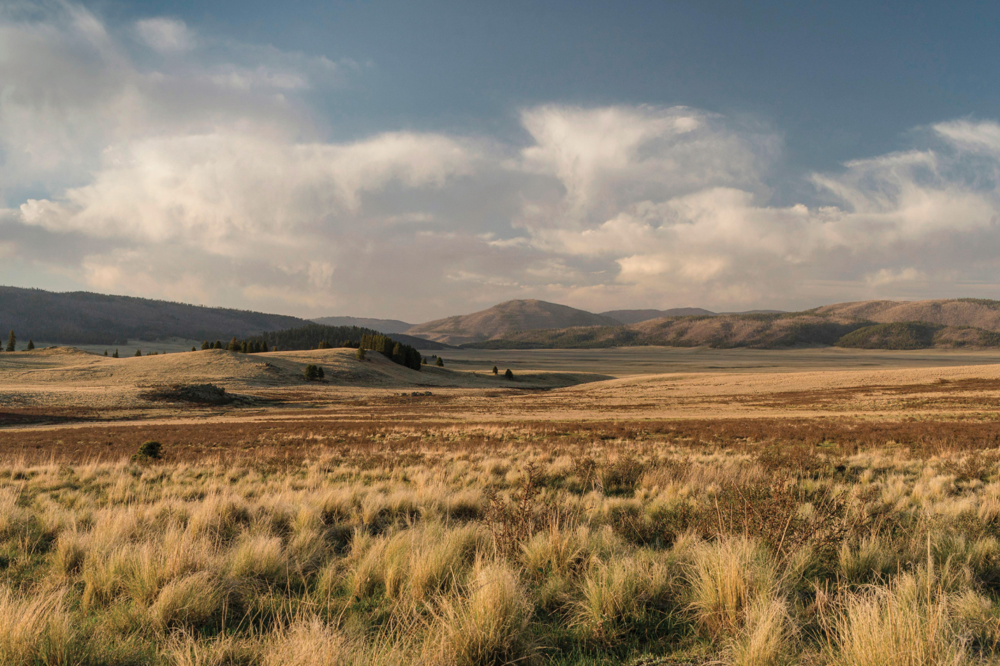

It is one thing to drive through the grasslands of northern New Mexico. It’s quite another to walk
through them. When the winds are relatively calm and there are clouds in the sky, the prairie stretches
meditatively ahead, flanged here and there with glimmers of illumination. It may look like nothing but
grass and light, but on foot you can see the prairie’s rich wildlife community — a herd of pronghorn
antelope grazing in a prairie dog town, or a Say’s phoebe flycatching while letting out a plaintive
pee-ur. The very fortunate might see the queen of grassland birds: the long-billed curlew, Numenius
americanus, which arrives here in the spring from Mexico, the Gulf Coast, or even Central America,
depleted after flying hundreds of miles in just a couple of days.
Grasslands are gorgeous ecosystems. The shortgrass prairies of northeastern New Mexico brim with blue
grama and buffalograss — perennial grasses whose roots stabilize the soil — and a subtle multitude of
wildflowers. Over the last two centuries, though, the flat, fertile grasslands of North America have
been razed for agricultural development: The American Bird Conservancy estimates that 51.3 million acres
in the Northern Great Plains have been plowed under and replaced with cropland. In 2018 and 2019 alone,
nearly 600,000 acres of Northern Great Plains grasslands — an area almost the size of Yosemite National
Park — were converted to fields of wheat, corn and soy.

Like many grassland birds, long-billed curlews nest directly on the ground. They tend to choose open,
flat expanses with very short grasses; curlews are territorial during the breeding season, and a single
pair will fiercely defend an area of 100 acres or more. Once their young hatch, curlews may use taller
grasses to shield the chicks from the elements and from predators such as coyotes, snakes and ravens.
When grasslands are commandeered for crops or fragmented by residential development, curlews lose the
habitat they need for breeding.
Though the long-billed curlew was once abundant in North America, in 2016 it landed on the North
American Bird Conservation Initiative’s “Watch List” of species most in danger of extinction without
significant conservation efforts. The initiative’s 2022 report confirms a narrative of population
decline among grassland birds: Species such as the mountain plover and chestnut-collared longspur have
lost more than 75% of their populations since 1970. “Since the 1960s, we’ve lost more than 40% of
grassland birds,” Steven Riley at the American Bird Conservancy told me. “A lot of grassland birds are
in dire condition today.” Today, an estimated 140,000 long-billed curlews breed in grasslands ranging
from northeastern New Mexico to southern British Columbia, but they continue to be threatened by habitat
loss and, in some places, by the use of pesticides and rodenticides, which can kill not only the
grasshoppers and other insects that curlews depend on but also birds themselves.
On Memorial Day last year, my husband, Michael, and our two girls and I hiked in the Rio Mora National
Wildlife Refuge without seeing a trace of a long-billed curlew. Not even a cry. There were other birds —
western meadowlarks in yellow-and-black sang throatily from fence posts, and horned larks with
schoolgirlish headbands scuttled in the dirt, looking for grass seeds. Long days spent observing birds
are like a yatra — a pilgrimage. A naturalist, I’ve been watching and studying long-billed curlews for
more than two decades, and I know not to expect an appearance simply because I’m in the field in the
right season. Transcendent experiences, after all, are rare.
After driving an hour north of Rio Mora, we turned west toward the town of Cimarron, following back
roads. The afternoon light was translucent, playing in the sky like musical notes, with clouds gathering
in tones of gray and the deep blue retreating until the billowy gray clouds all but devoured the sky. We
drove past private grasslands, and I scanned the prairie for curlews until my eyes hurt.
Then, in a mass of sage-gold grass, I spotted an unmistakable decurved bill.
I gasped. “I saw a curlew!”
“Should I turn around?”
“Yes!”
As soon as Michael pulled over to the shoulder of the road, I moved toward the two-foot-tall curlew. A
second curlew, perhaps its mate, stood in the same field, some 30 feet to its right. The pair screamed
almost in unison, determined to scare me away. I suspected that they had a nest nearby; as part of the
courting ritual, the male scrapes a shallow nest in the ground, and the female later lays a clutch of
four mottled eggs in the depression. Maybe this pair had chicks, since neither parent seemed to be
sitting on a nest. Cur-lee! Cur-lee! The female’s spectacularly extended bill, over eight inches long
and more curved at the tip than her companion’s, moved almost robotically as she opened it wide,
emitting shrill staccato cries.
The pair flew over me, arcing across the road and screeching as they flew. Then they soared into the
field on the other side, never far above my head. Soon, I saw another pair of curlews flying over the
second field. Four curlews! As the first pair landed, I saw the female deftly pluck a grasshopper from
the ground and swallow it. Moments later, she downed another.
If I had to pick one bird species to venerate, it would be the curlew. The reasons are partly
anthropomorphic — these large, gangly birds are fiercely protective of their young, and the fathers stay
behind to rear the chicks after the mothers fly on to central Mexico or some other wintering grounds.
Though curlews are monogamous, a paired male and female may spend the winter in different places before
returning each spring to the same grassland to breed. Talk about a couple giving each other space! The
pair rears the chicks for the first two or three weeks; after the mother leaves for her wintering
grounds, the father stays until the chicks can fly away from the nest site, usually another two or three
weeks. Compare the devotion of curlew fathers to, say, hummingbird dads, who typically have nothing to
do with chick-rearing.